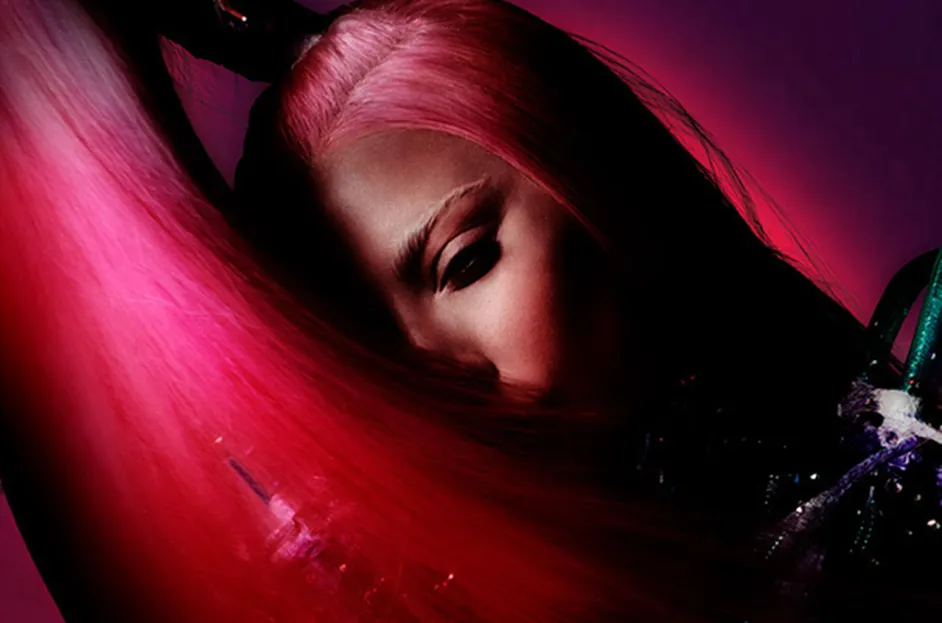

¡Se han anunciado los últimos shows de la residencia Adele's Weekends with Adele en The Colosseum en el Caesars Palace de Las Vegas!
Adele está pidiendo a los fanáticos que se registren para la venta de Weekends with Adele.
Chromatica Ball Tour Lady Gaga

hora, ha llegado el momento de que los seis lugares originales de la alineación de Chromatica Ball, así como los ocho nuevos lugares en todo el mundo, abran sus puertas a la flota de fanáticos dedicados de Mama Monster. Comenzando el 17 de julio en Düsseldorf y concluyendo el 10 de septiembre en Los Ángeles.